I have been working at the UGA Machine Shop and Fablab since my freshman year, gaining hands-on experience in both subtractive and additive manufacturing processes. Starting as the person in charge of maintaining and repairing the 3d printers, I have expanded my skillset to include a wide range of other manufacturing techniques. Currently, I serve as the sole student machinist at the machine shop, owning the manufacture of every piece that goes through the CNC mill.
Pedalbox for UGA Motorsports
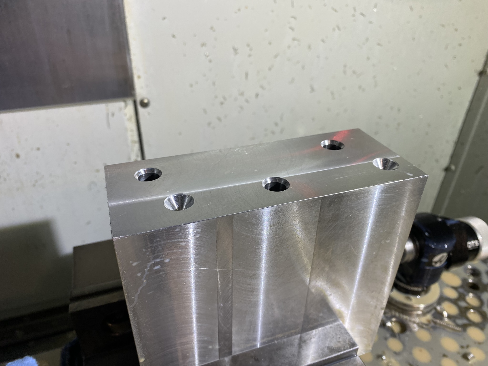
These holes had to go all the way through a lot of material. Due to the complex geometry later on, I decided to drill them at the beggining.
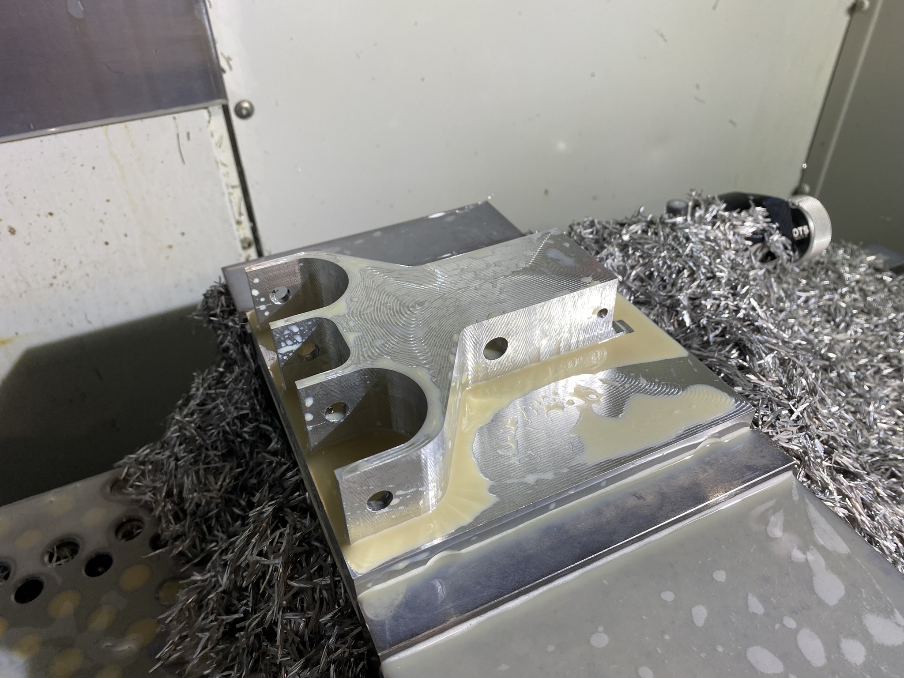
I cut the profile of the part with an endmill to about half of its thickness. The remainer was cut later.
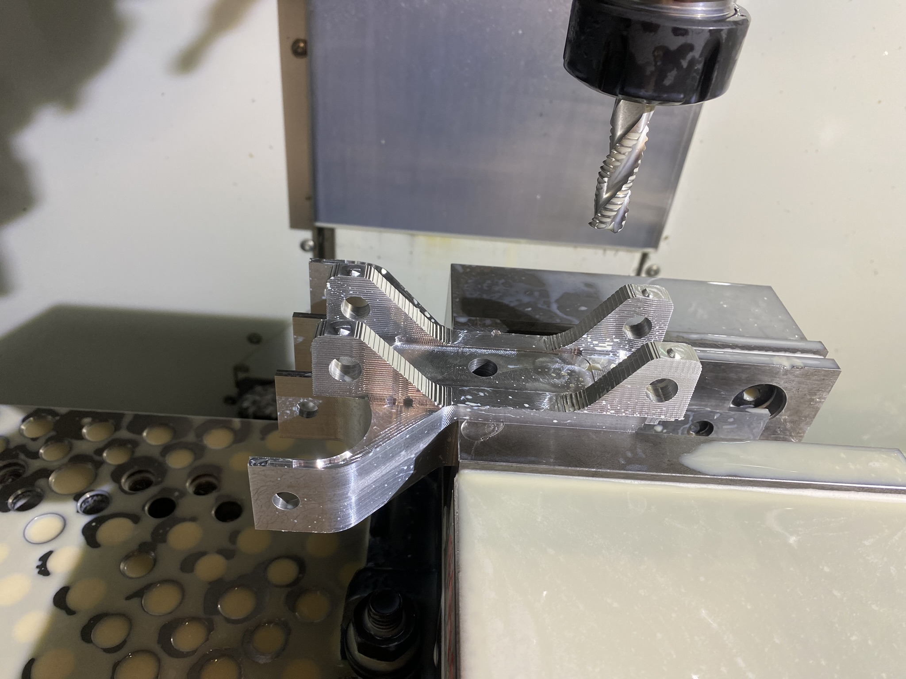
Part was flipped and the remaining material was removed with a roughing end mill.
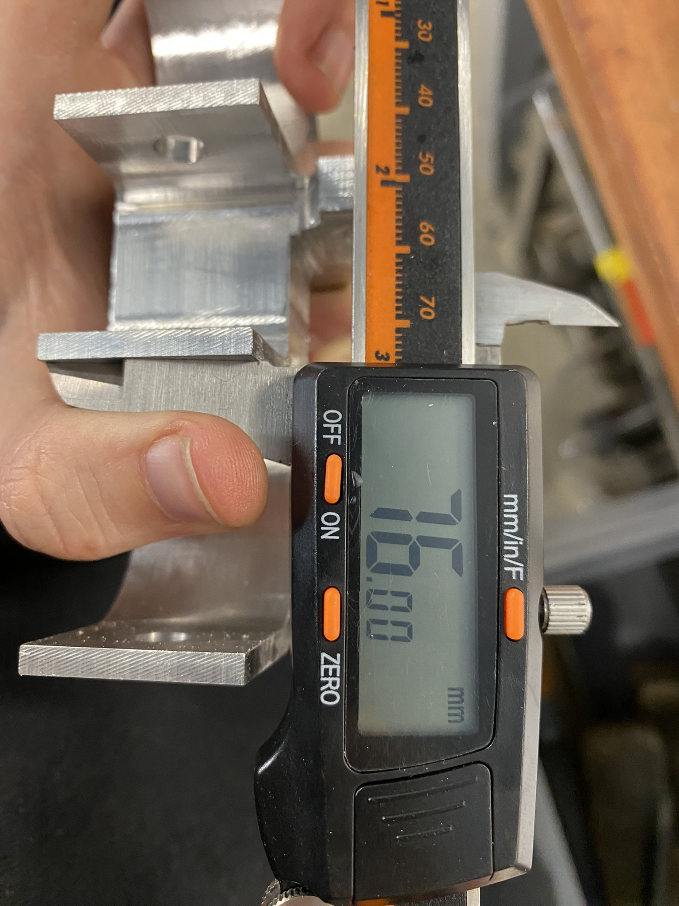
Nonchalant flex.
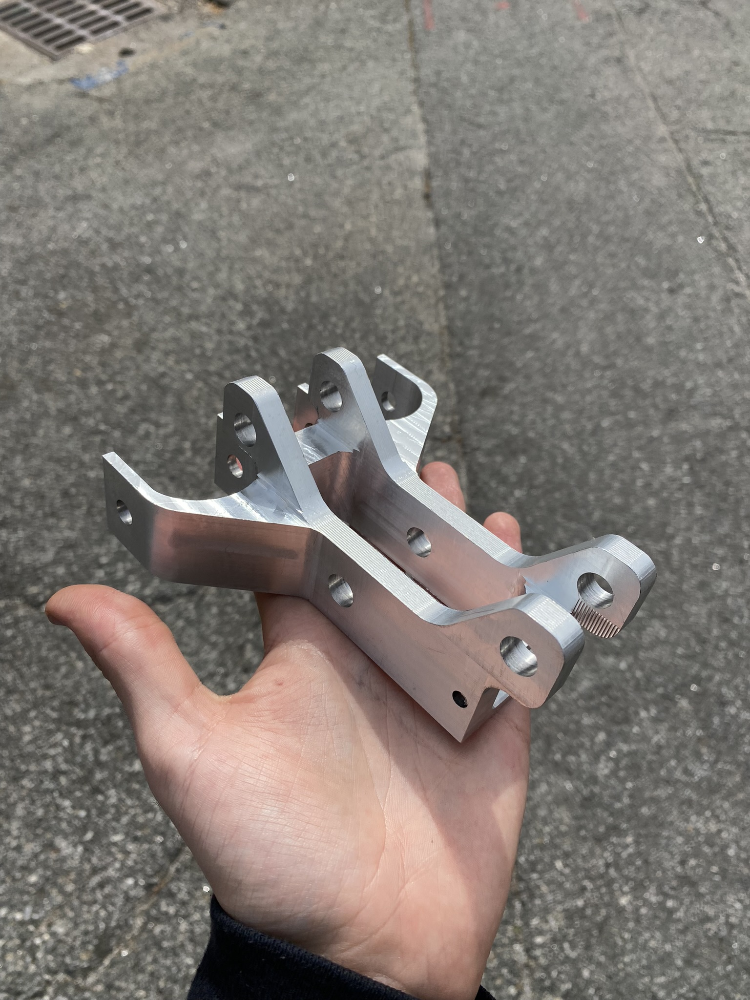
Final part fresh off the mill.
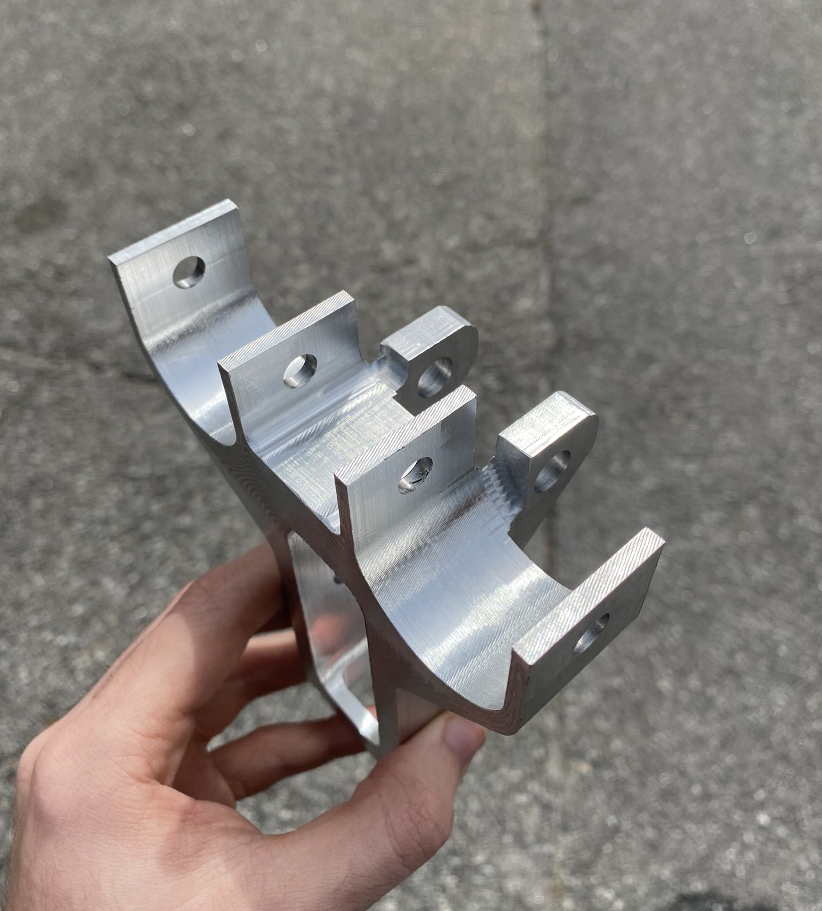
This side had some weird features that required surfacing and a narrow slot.
Ionization Chamber for PHD Student
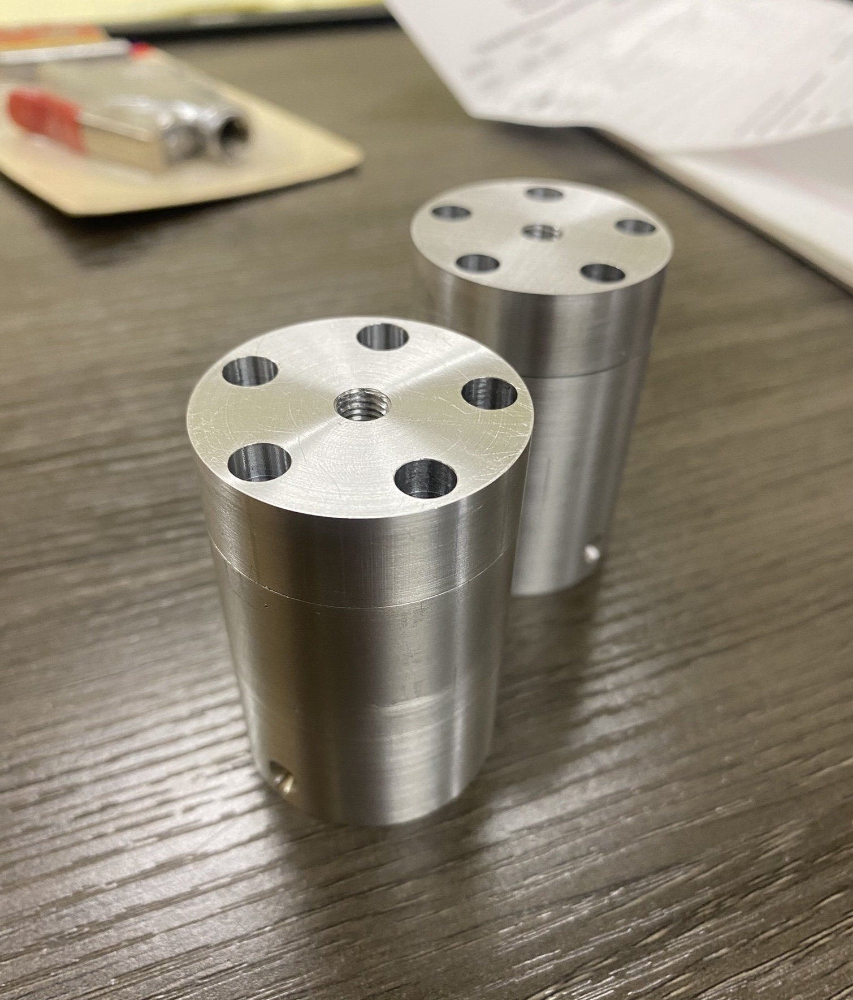
Outer shape was cut on the lathe, with inner features done on a CNC mill.
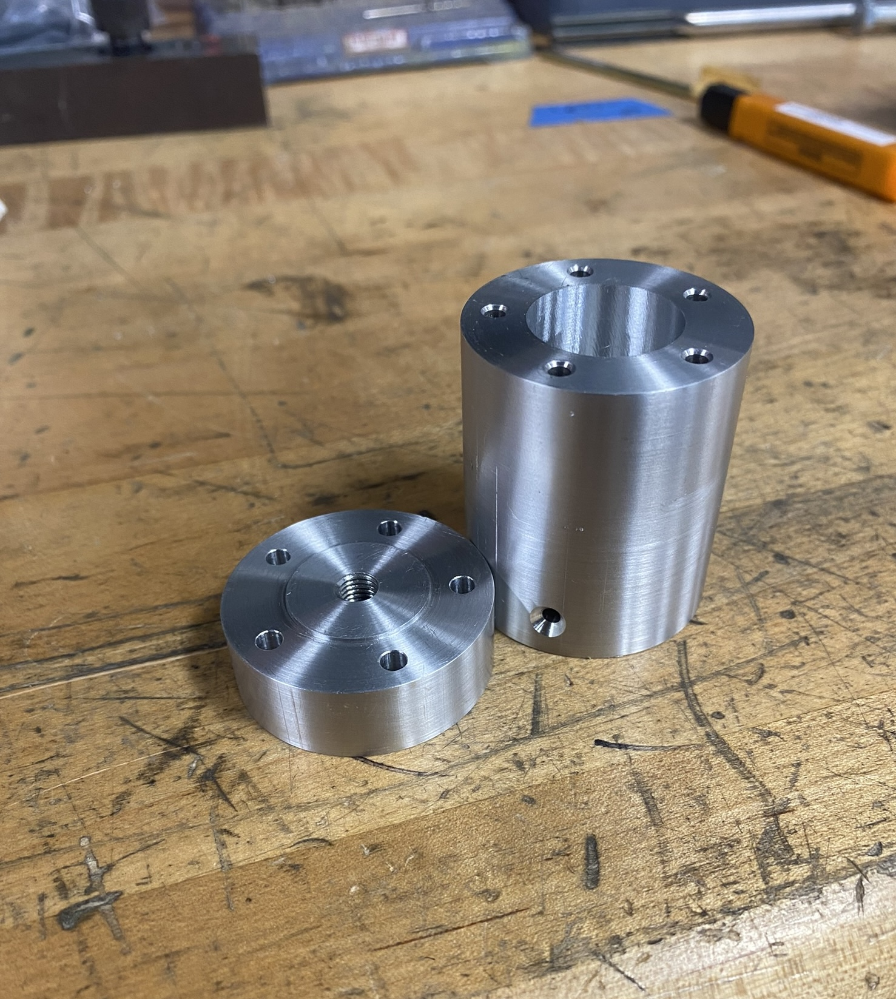
Careful attention was put to ensure the inner chamber would remain watertight when the special sensor is installed.
Miscellaneous Projects
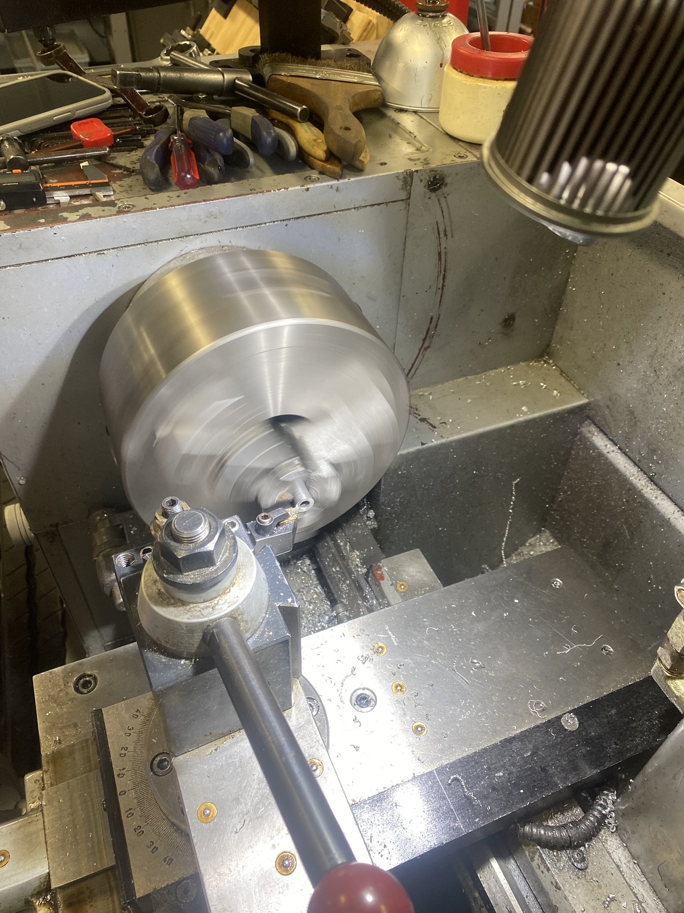
Cutting a rod with the lathe to function as a spacer. This was a simple part, but it was important to ensure the cut was clean and precise.
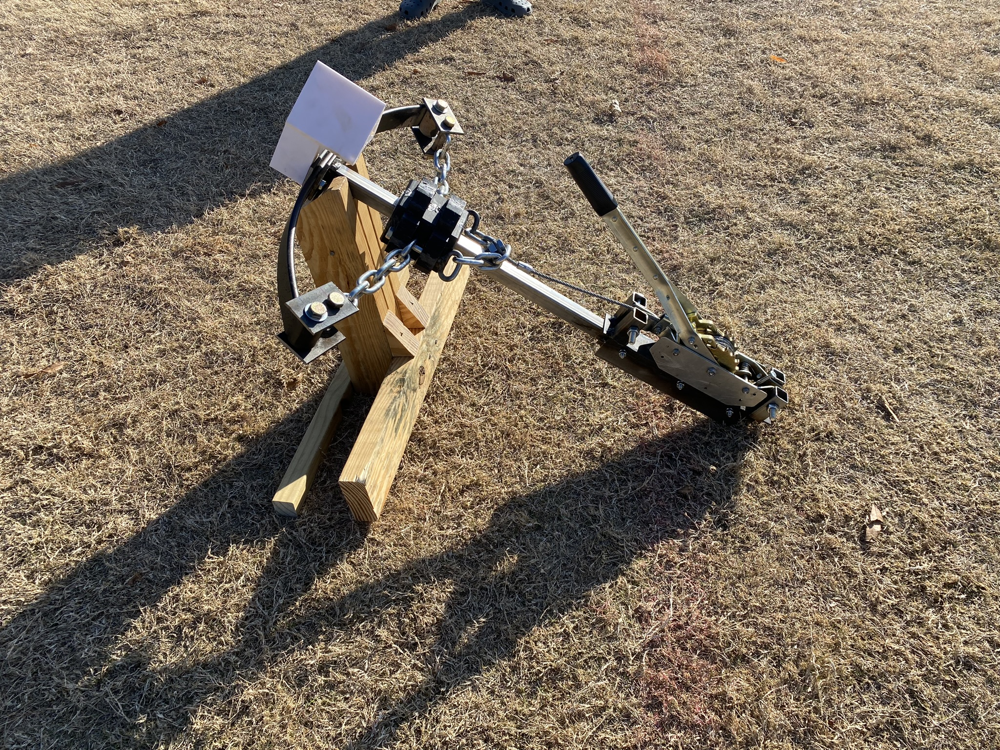
Project for a class. We had to make a disc-launcher, and my team chose to use a *very dangerous* truck leaf spring.
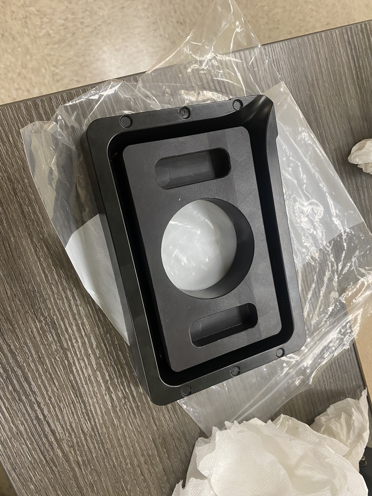
Designed and machined this teflon print volume adapter for a lab. They worked with novel SLA resins that are difficult to make in large amounts, so they wanted to be able to print with less.
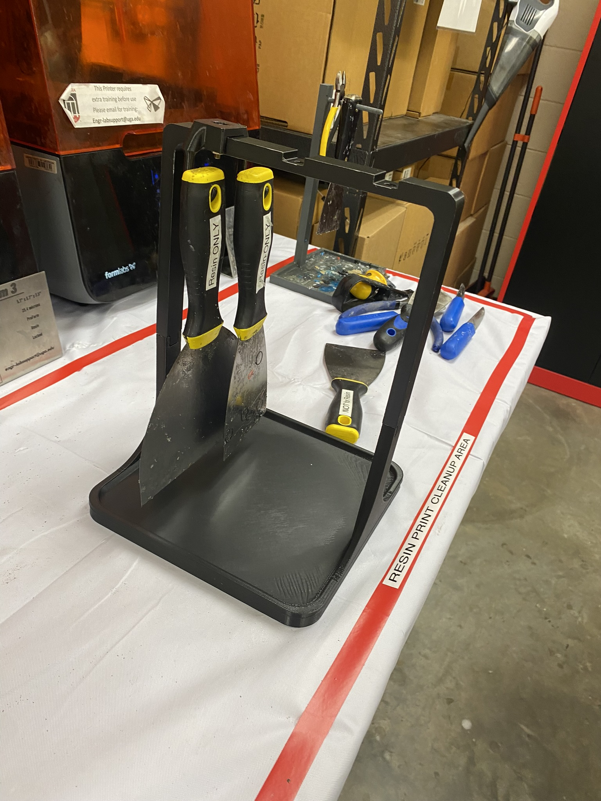
Toolholder for the resin printer.
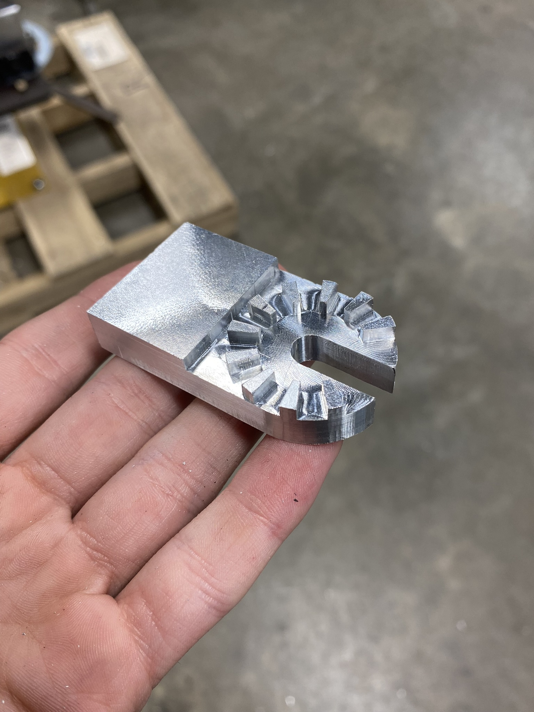
Machined this hastings adapter for a capstone project. Had to use a very small endmill to achieve the gap between the teeth and the wall.
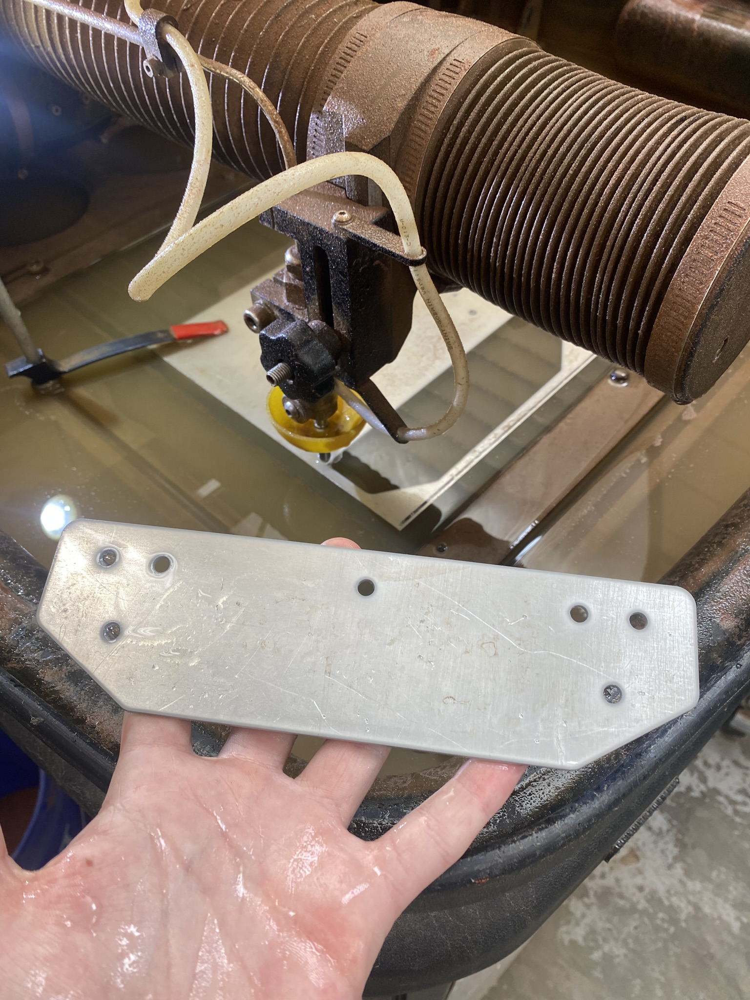
Random part that I waterjet for the ballista.